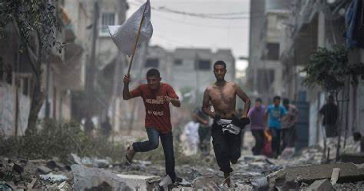

收录于合集

作品简介
【作者】 Yoram Dinstein, 以色列特拉维夫大学荣誉退休教授，主要研究国际法、战争法等问题。
【编译】 戴赟（国政学人编译员，外交学院硕士研究生）
【校对】 石雨宸
【审核】 伍雨荷
【排版】 高佳美
【美编 】方引弓
【来源】 Dinstein, Y. (2008). Distinction and loss of civilian protection in international armed conflicts. International Law Studies, 84 (1), 183-198
【归档】 《国际关系前沿》2021年第1期，总第28期。
期刊简介
《国际法学研究》（International Law Studies）是一份经过专业编辑和同行评议的期刊。最早发刊于1895年，是美国最古老的国际法出版物。《国际法研究》为杰出的国际法学者和军事实践者提供了一个论坛，发表文章，以促进发展和更广泛地理解有关军事领域打扰国际法。本刊特别侧重于武装冲突法、海上安全、海洋法和与军事有关的一般国际公法。
国际武装冲突：保护平民的区分和其身份丧失
Distinction and Loss of Civilian Protection in International Armed Conflicts
Yoram Dinstein
文章导读
01
区分原则
在国际武装冲突法的基础上有几项基本原则。经过审查，“区分原则”是最关键的。不可否认，这一首要原则是现代习惯国际法不可分割的一部分。这也反映在1949年日内瓦公约的1977年第一附加议定书第48条的“基本规则”中，其中规定“冲突各方在任何时候都应区分平民人口和战斗人员，区分平民目标和军事目标，因此应只针对军事目标采取行动。”
从条文中可以清楚地看到，关键区分点在平民和战斗人员之间（作为推论，也在军事目标和平民目标之间）。国际红十字委员会（ICRC）所采取的区分平民和武装部队成员的二分法是错误的。除去并非所有武装部队成员都是战斗人员的事实之外（医疗和宗教人员除外），直接参与敌对行动的平民虽然不是任何武装部队的成员，但在他们以这种方式行动时，就会丧失其平民身份。
与战斗人员相比，战时平民地位的标志是，平民以及平民目标享有免受敌人攻击的保护。根据《罗马规约》的规定，故意攻击平民（不直接参与敌对行动）或平民目标是战争犯罪。
在此情况下，“攻击”(attack)一词是指任何暴力行为，其最广泛的理解是（包括非动态攻击），只要它造成生命损失、身体或心理伤害或财产损害都可以理解为“攻击”。攻击不包括非暴力行为，如非伤害性心理战。计算机网络攻击（computer net attack）使允许攻击的范围变得模糊。在公认的定义中，只有当攻击造成人员伤亡或财产损失时（比如，一台计算机瘫痪），才可以称之为攻击。
区分原则不仅不包括对平民的蓄意攻击，而且也不包括无差别攻击，即攻击者不以任何具体军事目标为目标的攻击（要么由于对随后的伤亡是平民还是战斗人员漠不关心，要么由于无法控制攻击的后果）。一个典型的例子是伊拉克于1991年向位于以色列居民区或附近的军事目标发射飞毛腿导弹，即便由于飞毛腿导弹内置的不精确性使其无法精确攻击军事目标（而且，在该事件中，没有击中任何军事目标）。
在常规的国家间战争中，禁止无差别攻击可能比禁止直接攻击平民更有实际意义。原因在于，现在一个文明国家的武装部队几乎不会将平民预先设想为攻击目标。然而，无差别攻击的发生可能性则要高得多。一种常见的例子是，作战能见度为零，而且用于确定预先选定的军事目标的仪器出现故障，高空空袭仍然发生了。因此，军事训练必须首先能够解决无差别攻击的问题，才能完全消除无差别攻击。
平民目标（保护而不受攻击）的对立面是军事目标（不受保护）。军事目标的权威性定义载于第一附加议定书第52条第（2）款：
攻击应严格限于军事目标。就物体而言，军事目标只限于由于其性质、位置、目的或用途对军事行动有实际贡献，而且在当时情况下其全部或部分毁坏、缴获或失去效用提供明确的军事利益的物体。
_
_
这个定义是非常开放的，因为每一个平民目标，不排除医院和教堂，都容易被敌人用于军事目的。这种使用（或滥用）甚至会把医院或教堂变成军事目标，使其在某些情况下受到合法攻击。根据第一附加议定书第52条第（3）款，唯一会削弱考虑的地方是，在有疑问的情况下，应推定该地点实际专用于正常目的。
由此可见，加强对平民保护的关键之处，也许不是符合集中攻击可识别的军事目标的基本法律要求，而是在法律的补充条件中，使攻击遵守相称性。这意味着，如第一附加议定书第51条第5款第2项中的规定，在计划攻击军事目标时，平民或平民目标的附带损害不应被认为超过预期的具体和直接军事利益。根据国际刑事法院《罗马规约》第8条第2款的规定，明知会对平民造成附带损失或伤害，或对平民目标造成损害，而故意发动攻击，并且显然这种伤害已经超过具体的和直接的全民军事利益，那么这种攻击是触犯了战争罪。
根据第一附加议定书第57条第2款中的规定，那些做出攻击计划或决定的人必须采取一切可行的预防措施（考虑到当时的所有情况），如果不能完全避免，至少要尽量减少平民或平民目标的附带损失。然而，将附带损害降到最低的愿望不能超过所有其他军事投入。将平民的损失最小化是对的，但攻击部队不应承担所有代价。攻击者没有义务只为了尽量减少敌方平民或平民目标的附带损失而承受军事损失。评估攻击的军事优势时要适当考虑军事人员生存和与装备生存的相称情况。
根据第一附加议定书第57条第3款规定，为了实现使平民和平民目标免受攻击影响的同样目标，如果有可能在若干军事目标中选择以获得类似的军事优势，则应选择预期造成平民附带损失和损害最少的目标。然而，遗憾是的，事实却是，往往不可能以任何程度的可信性来确定消除各种军事目标是否会带来类似的军事优势。
武装冲突法特别指出某些特定类别的平民应受到特别保护，或因为他们被认为特别易受伤害，或因为他们所履行的职能。第一类是妇女和儿童，第二类是平民医疗和宗教人员。同样，某些平民目标，例如文化财产或礼拜场所，也受到特殊保护。但是必须认识到的是，这种保护只能看作蛋糕上的糖霜，它增加了蛋糕的风味，但并不会影响蛋糕真正的核心。为了特定的人或物体的利益，需要施加一些额外的要素，加强保护范围，但最重要的保障却始终给予所有平民和平民目标。
02
直接参与敌对行动
平民直接参与敌对行动会导致失去免受攻击的保护（在有关活动的时间范围内）。根据第一附加议定书第51条第3款规定，在军事行动引起的危险下，平民享有一般保护，除非他们直接参与敌对行动。有时会用到“主动”（而不是“直接”）参与敌对行动，有时会将这两个形容词全部删掉。本质内容是一样的：参与敌对行动的人会失去保护。
有一种共识是，当平民直接参与敌对行动时，他就可能成为攻击目标。尽管如此，关于学术分类仍然存在着激烈争论。就我而言，我相信，通过直接参与敌对行动，一个人就会变成一名战斗人员——实际上，往往是一名非法的战斗人员。另一方面，红十字国际委员虽然承认“在攻击中失去保护是显而易见的，毫无争议的”，但坚持认为这类人员的身份仍然是平民。
只有当相关人员被抓住时，关于其身份的不同意见才会产生实际的结论。作者倾向于认为，作为一名非法的战斗人员，他失去了日内瓦四公约的一般保护（在被占领领土内的除外），只享有符合人权标准的一些最低限度的保障。红十字国际委员会坚持认为，根据日内瓦四公约对被扣押的平民的一般保护也适用于直接参与敌对行动的平民。作者的立场是以公约第5条为基础的，除了在被占领领土内，那些从事敌对行动的人并不能从公约的特殊保护中获益，但是他们仍然必须受到人道对待，并有权得到公平的审判。
03
**
**
直接参与敌对行为平民的定点清除
《海牙规则》第23条第2款禁止以欺诈的方式杀害敌方个人，第一附加议定书第37条第1款禁止以背信弃义的方式杀害敌人。然而，当没有采用欺诈的方式时，即使是红十字国际委员会手册也承认敌人个体战斗人员可能是攻击目标（包括作为总司令的国家元首）。
平民是否直接参与敌对行动的问题与有针对性的问题之间定点清除存在着联系。按照逻辑，由于战斗人员可能成为攻击的个别目标，同样的规则也应适用于直接参与敌对行动的平民（在他参与该活动时）。
在被占领领土内，存在一个与直接参与敌对行动的平民的定点清除有关的初步问题，即，占领国是否能够对这些人采取有效的执法措施，而不是杀害他们。正如以色列巴拉克总统所强调的那样，对直接参与针对占领国敌对行为的人施行扣押是首选步骤，且前提是对其进行逮捕是可行的。如果扣押措施不可行，那么必须认识到，直接参与敌对行动的平民同任何战斗人员一样会面临生命危险，而且会面临致命的攻击。换句话说，当非致命措施不可用或无效时，将这类人作为攻击目标并杀死是允许的。
尽管以色列最高法院宣布，（当无法拘留时）在被占领领土对恐怖分子进行定点清除是合法的，但法院坚持认为，只要目标人员附近有无辜平民，而且他们有可能受伤，就必须适用相称性原则。在以色列，定点清除区域使用相称性原则非常必要，因为曾发生过一起对藏匿在居民区的一名巴勒斯坦恐怖分子使用了一吨重的炸弹。现在有越来越多的公众认为，不应该使用如此大规模的炸弹，因为它几乎必然会对附近平民造成过多的附带伤害。
04
人体盾牌的探讨
这些问题引出了使用平民“人体盾牌”保护战斗人员或军事目标的类似问题。日内瓦第四公约第28条规定，对于被保护人不得利用其安置于某点或某地区以使该处免受军事攻击。第一附加议定书第51条第7款中规定，平民居民或平民个人的存在或移动不应用于使某些地点或地区免于军事行动，特别是不应用以企图掩护军事目标不受攻击，或掩护、便利或阻碍军事行动。冲突各方不应指使平民居民或平民个人移动，以便企图掩护军事目标不受攻击，或掩护军事行动。确凿无疑的是，禁止使用平民作为人体盾牌是习惯国际法的反映。《罗马规约》中规定将平民或其他被保护人置于某些地点、地区或军事部队，利用其存在使该地点、地区或军事部队免受军事攻击的行为触犯战争罪。
无可争议的是，当战斗人员（包括直接参与敌对行动的平民）被平民包围保护时，这违反了国际武装冲突法。尽管在这种情况下，还是有必要区分自愿和非自愿的人体盾牌。以色列最高法院在定点清除案件中裁定，非自愿的人盾是受害者，自愿的人盾则被视为直接参与敌对行动的平民。在这种情况下，自愿人体盾牌是攻击目标，当然，在评估相称性时，他们被排除在意外伤害的估计之外。
如果违反国际武装冲突法，非自愿的人体盾牌实际上被迫对一个军事目标进行掩护，情况会怎样？第一附加议定书第51条第8款规定，对这些禁例的任何违反，不应解除冲突各方关于平民居民和平民的法律义务，包括第五十七条所规定的采取预防措施的义务。这意味着，在进攻中相称性原则仍然有效。
最后，虽然保护平民是武装冲突国际法的一项基本原则，但平民不能认为这种保护是理所当然的。在很多情况下，对平民的保护不会提供实际的帮助，而且平民会在无意中（由于附带伤害）成为战争的受害者。但是，重要的是，如果有权获得保护的人由于直接参与敌对行动而越过红线，那么可能就会失去平民保护。他可能会成为攻击目标，并且攻击不需要以匿名的方式进行，在没有采用背信弃义的情况下，子弹可以穿过他们的身体也被视为合法。

译者评述
当今世界虽处和平年代，但是局部冲突时有发生。凡有武装冲突的地方，平民会是武装冲突中的主要受害者。在当今许多武装冲突中，平民伤亡和民用基础设施毁坏不仅是武装冲突附加产生的结果，而且是故意针对非战斗人员的后果。
在许多冲突中，一方为了加速另一方的投降，会把目标对准平民，赶走或消灭一部分民众，这使得广大无辜平民遭受横祸。战争或武装冲突应局限于作战人员之间，不应伤及无辜，平民享有免受敌对行动影响的一般保护。对武装冲突中平民的保护，不只是出于人道主义精神对弱者的同情，更重要的是对人权的尊重。惩处严重违反国际人道主义法的犯罪行为，维护人类社会整体的和平、安全、正义和秩序，符合全人类的根本利益。
在新冠疫情大爆发的年代，国际安全形势依然严峻，部分地区武装冲突持续升级，平民仍然是武装冲突中直接且首要的受害者，占冲突伤亡人员中的绝大多数。因此，国际社会应采取有效且务实的措施，保障武装冲突中的平民安全。
词汇整理
【1】Geneva Convention 日内瓦公约
【2】Directly participate in hostilities 直接参与敌对行动
【3】“Revolving door” phenomenon 旋转门现象
【4】Military advantage 军事利益
【5】Human shields 人体盾牌
文章观点不代表本平台观点，本平台评译分享的文章均出于专业学习之用, 不以任何盈利为目的，内容主要呈现对原文的介绍，原文内容请通过各高校购买的数据库自行下载。
**
**
**
**
**
**
添加 “国小政”微信
获取最新资讯


国政学人
支持学术公益与知识传播
微信扫一扫赞赏作者 __赞赏
已喜欢，对作者说句悄悄话
取消 __
发送给作者
发送
最多40字，当前共字
上一页 1/3 下一页
长按二维码向我转账
支持学术公益与知识传播
受苹果公司新规定影响，微信 iOS 版的赞赏功能被关闭，可通过二维码转账支持公众号。